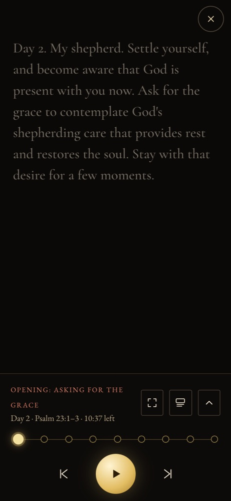

The player on the phone: everything was written and recorded beforehand, so prayer needs no model.

GET /api/retreats/{id} returns the retreat with a signed link, good for 24 hours, to each painting and recording in the private bucket.POST …/days/{day}/progress remembers where you stopped, so you can resume on another device; POST …/days/{day}/prayed marks the day prayed.GET /api/retreats/{id}/script.pdf prints the day or the whole retreat.listening (where you are), prayed_at, journalimage{i}.jpg, day{n}_{part}.mp3, .words.jsonNothing is generated while you pray. The voices were recorded when the day was built (feature 3).
Microsoft neural voices (free) or ElevenLabs eleven_multilingual_v2, as chosen for each part.
The Media Session API for lock-screen controls; the bells and silences are small audio files served with the app.